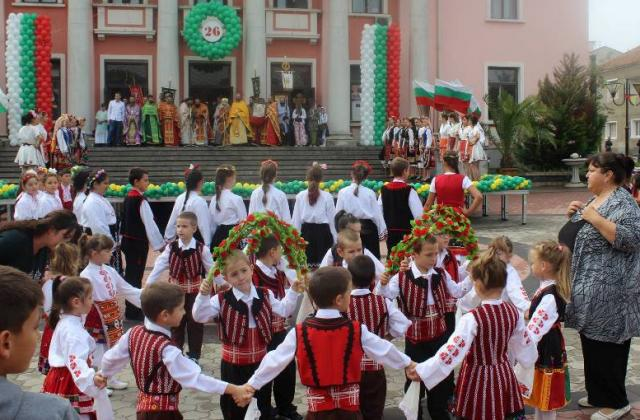
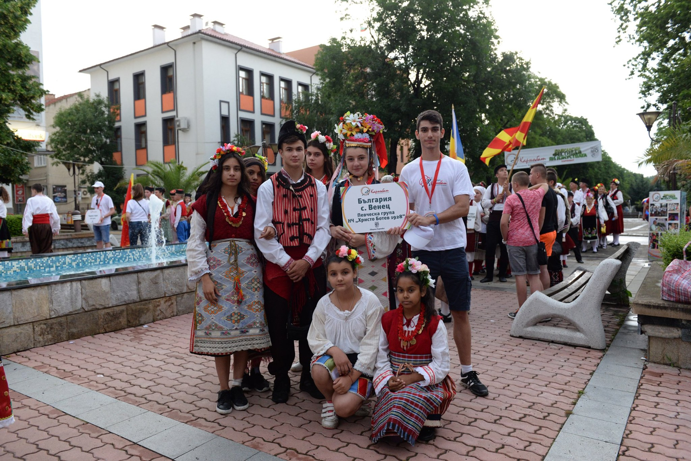
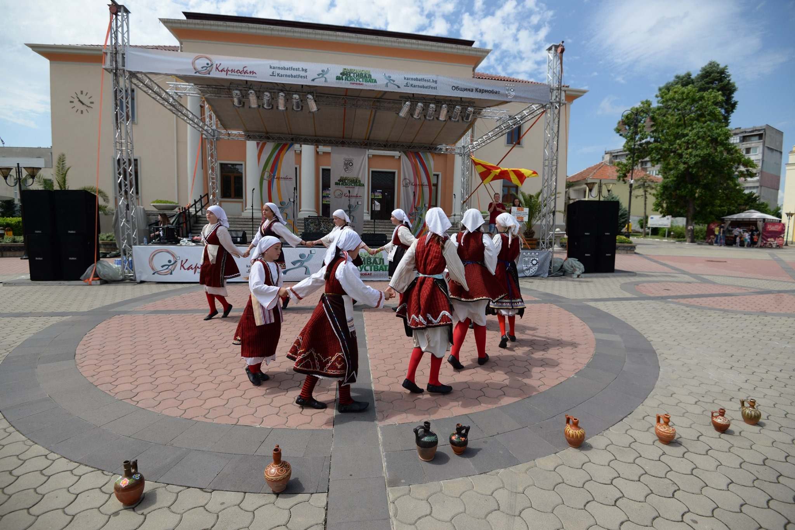

Карнобат-Традиции и обичаи
Празник на града
| Датата 26-ти септември е обявена за Ден на Карнобат. Изборът не е случаен. На 26 септември православната църква чества успението на Св. апостол и евангелист Йоан Богослов, небесен закрилник на града и обединител на православните християни. Карнобат е град с древна история и богато културно наследство. Стратегическото му местоположение го е направило уникално място, на което от векове се пресичат пътища на хора, етноси, култури и пазари. Освен история и култура градът има силни земеделие и промишленост. В Карнобат се прави наука, успешно се развиват производства, внедряват се нови технологии. Днес новото лице на града са овощарството, лозарството, вината, които печелят престижните международни конкурси. |  |
Балкански фестивал на изкуствата Карнобат
| Карнобат фест 2019 преминава неусетно, но магично! Насладаваме се на величествени фолклорни състезания по надпяване, надсвирване и надиграване. Програмата днес включва парад на всички участници, концерт на български и чуждестранни изпълнители, а кулминация ще поставят тържествената заря и голямото празнично хоро под мотото „Всички на хорото“. Замислен като тържество на фолклорните песни и танци Балканският фестивал на изкуствата и тази година ще даде възможности за изява на артистични таланти и виртуози в много различни сфери. |  |
|  | Жителите и гостите на Карнобат ще могат да видят и впечатляващо барман шоу с уъркшоп за приготвяне на коктейли, многобройни стрийт арт прояви, детска лаборатория за химически експерименти и разбира се завладяващи концерти на популярни изпълнители от всякакви музикални стилове. С над 30 хиляди посетители през последните шест години фестивалът в Карнобат затвърди позициите си като един от големите на Балканите, където важна среща си правят и поколенията. |